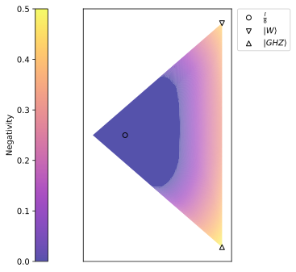

Multipartite Entanglement: PPT Mixture
Plan
- Definitions
- Detecting genuine multipartite entanglement with PPT mixtures
- PPT mixtures and entanglement witnesses
- Optimization problem
- Results
Definitions
Multipartite Entanglement of Pure States
Consider pure states in the composite Hilbert space \(\mathcal{H}_1\otimes \ldots \otimes \mathcal{H}_N\).
Fully separable: \[\ket{\phi^{FS}}_{1|2|\ldots|N} = \ket{\phi_1}\otimes\ket{\phi_2}\otimes\ldots\otimes\ket{\phi_N}.\]
\(m\)-separable across partition \(P_1,\ldots, P_m\), where \(1 < m < N\): \[\ket{\phi^{m-S}}_{P_1|\ldots|P_m} = \ket{\phi_1}_{P_1}\otimes\ket{\phi_2}_{P_2}\otimes\ldots\otimes\ket{\phi_m}_{P_m}.\]
Biseparable across a bipartition \(M|\overline{M}\): \[ \ket{\phi^{BS}}_{M|\overline{M}} = \ket{\alpha}_{M}\otimes\ket{\beta}_{\overline{M}}\qc \varnothing\ne M \subsetneq \{1\ldots N\}. \]
Genuine multipartite entangled (GME): neither fully separable nor \(m\)-separable.
Examples for 3 Qubits: Fully Separable State
\[\ket{0}_A\otimes\ket{0}_B\otimes\ket{0}_C\]
Examples for 3 Qubits: Biseparable States
\[\ket{\Phi^+}_{AB}\otimes\ket{0}_C\]
\[\ket{\Phi^+}_{AC}\otimes\ket{0}_B\]
\[\ket{0}_A\otimes\ket{\Phi^+}_{BC}\] 
Examples for 3 Qubits: GME States
\[\begin{aligned} \ket{GHZ} &= \frac{1}{\sqrt{2}}\left(\ket{000} + \ket{111}\right)\\ \ket{W} &= \frac{1}{\sqrt{3}}\left(\ket{001} + \ket{010} + \ket{100}\right) \end{aligned}\]

Multipartite Entanglement of Mixed States
\[\begin{aligned} \rho^{FS} &= \sum_{i} p_i \ketbra{\phi_i^{FS}}\qc&\text{fully separable}\\ \rho^{m-S} &= \sum_{i} p_i \ketbra{\phi^{m-S}_i}\qc &m-\text{separable}\\ \rho^{BS} &= \sum_{i} p_i \ketbra{\phi^{BS}_i}\qc &\text{biseparable} \end{aligned} \]
States in the mixture can be separable w.r.t. different partitions.
Genuine multipartite entangled: neither fully separable nor \(m\)-separable.
Structure of Tripartite Entanglement

Detecting Genuine Multipartite Entanglement
Given a density matrix \(\rho\), can we determine if the state it describes is genuinely multipartite entangled?
Can We Just Apply PPT Criterion?
Let’s consider this biseparable state: \[\small \Theta = \frac{1}{3}\left(\ketbra{\Phi^+}_{AB}\otimes \ketbra{0}_C + \ketbra{\Phi^+}_{BC}\otimes \ketbra{0}_A + \ketbra{\Phi^+}_{AC}\otimes \ketbra{0}_B\right)\]
For any bipartition, this state is NPT: \[\Theta^{\top_A}, \Theta^{\top_B}, \Theta^{\top_C} \not\succeq 0\] The naive application of the PPT criterion does not work.
PPT Mixtures
\[\begin{aligned} \rho^{BS} &= \sum_i p_i \sigma_i^{BS}&\quad \sigma_i &= \alpha_{M_i}\otimes\beta_{\overline{M_i}}\\ &\cap &\\ \rho^{PPT Mix} &= \sum_i p_i \sigma_i^{PPT}&\quad \sigma_i^{\top_{M_i}} &\succeq 0 \end{aligned}\]
PPT Mixtures for Three Parties

Given a density matrix \(\rho\), can we determine if the state it describes is a PPT mixture?
Entanglement Witnesses
Entanglement Witnesses
For a given state \(\rho\) we are looking for hermitian \(W\) (witness)
\[\begin{gathered} \Tr(W\rho) < 0\\ \Tr(W\sigma) \ge 0\quad\text{if $\sigma$ is PPT mixture} \end{gathered}\]

Decomposable Witnesses
\(W\) is decomposable w.r.t. bipartition \(M|\overline{M}\) if
\[ \exists P, Q \succeq 0\qq{s.t.}W = P + Q^{\top_M}. \]
Take \(Q = 0\) then \(P\text{ is decomposable }\).
Take \(P = 0\) then \(Q^{\top_M}\text{ is decomposable }\).
The set of decomposable operators is convex.
\(W\) is fully decomposable if it is decomposable w.r.t. all bipartitions \(M|\overline{M}\).
Why Do We Like Decomposable Witnesses?
Suppose \(W\) is a fully decomposable witness and \(\rho\) is a PPT mixture. Let’s compute \(\Tr(W\rho)\): \[\Tr(W\rho) = \sum_i p_i \Tr(W \sigma_i^{PPT}).\]
Let’s pick some bipartition \(M|\overline{M}\) and corresponding component \(\sigma_i\): \[\begin{gathered} \sigma_i^{\top_M} \succeq 0,\\ W = P + Q^{\top_M}\qc\text{ for some }P,Q\succeq 0. \end{gathered}\]
\[ \Tr(W \sigma_i) = \Tr(P \sigma_i) + \Tr(Q^{\top_M} \sigma_i) = \Tr(P \sigma_i) + \Tr(Q \sigma_i^{\top_M}) \ge 0 \]
Fully decomposable witness can never be negative on a PPT mixture state!
Finding a Fully Decomposable Witnesses
Instead of \[\begin{gathered} \Tr(W\rho) < 0\\ \Tr(W\sigma) \ge 0\quad\text{if $\sigma$ is PPT mixture} \end{gathered}\]
We can do \[\begin{gathered} \Tr(W\rho) < 0\\ \text{For all bipartitions}\ M|\overline{M}:\\ \quad\exists\ P,Q\text{ s.t. }W = P + Q^{\top_M} \end{gathered}\]
If \(\rho\) is not a PPT mixture, can we always find such witness?
Finding a Fully Decomposable Witness
\[ \begin{gathered} \rho \not\in \left\{\text{PPT Mixtures}\right\}\text{ with witness }W\\ W \not\in S_M\text{, where }S_M=\{\text{decomposable Hermitian operators w.r.t. $M$}\} \end{gathered} \]


Finding a Fully Decomposable Witness
There exists Hermitian operator \(\sigma\) that separates \(S_M\) from \(W\): \[\begin{gathered} \Tr(\sigma W) < 0\\ \Tr(\sigma W_M)\ge 0\quad\forall\ W_M \in S_M \end{gathered}\]
\(\sigma\) is positive-semidefinite: \[\forall \ket{v}\quad \bra{v}\sigma\ket{v} = \Tr(\sigma \ketbra{v}) \ge 0\text{ since }\ketbra{v}\in S_M\]
\(\sigma^{\top_M}\) is positive semidefinite: \[\bra{v}\sigma^{\top_M}\ket{v} = \Tr(\sigma^{\top_M} \ketbra{v}) = \Tr(\sigma \ketbra{v}^{\top_M}) \ge 0\text{ since }\ketbra{v}^{\top_M}\in S_M\]
Then \(\sigma\) is a PPT state w.r.t. M and \(\Tr(\sigma W) < 0\), which contradicts to how \(W\) was chosen.
Summary
\[\rho \not\in \left\{\text{PPT Mixtures}\right\}\quad \Leftrightarrow\quad \exists\text{ fully decomposable witness }W\]
Optimization Problem
\[ \begin{array}{rl} \min_W & \operatorname{Tr}(W\rho)\\ \text{s.t.} & \operatorname{Tr}(W) = 1\\ & \text{For all subsystem subsets $M$:}\\ &\quad W = P_M + Q_M^{\top_M}\\ &\quad P_M, Q_M \succeq 0 \end{array} \]
We only need to check half the subsystem subsets: \[W = P_M + Q_M^{\top_M} = P_M + \left(Q_M^{\top}\right)^{\top_{\overline{M}}}\]
Implementation with CVXPY
def find_witness(rho: np.ndarray, dims: List[int]) -> Optional[np.ndarray]:
w = cp.Variable(rho.shape, "w", complex=True, hermitian=True)
constraints: List[Constraint] = [cp.trace(w) == 1]
n_subsystems = len(dims)
subsets = [c for cc in [combinations(range(0, n_subsystems), s)
for s in range(1, n_subsystems // 2 + 1)]
for c in cc]
for subset in subsets:
p = cp.Variable(rho.shape, complex=True, hermitian=True)
q = cp.Variable(rho.shape, complex=True, hermitian=True)
q_pt = q
for idx in subset:
q_pt = partial_transpose(q_pt, tuple(dims), idx)
constraints.extend([p >> 0, q >> 0, w == p + q_pt])
problem = cp.Problem(cp.Minimize(cp.real(cp.trace(w @ rho))),
constraints)
result = problem.solve()
if result < 0 and not np.isclose(result, 0):
return w.value
return NoneKnown Witnesses
Witness for \(\ketbra{\psi}\):
\[W_{\psi} = \alpha \mathbb{I} - \ketbra{\psi}\]
\[\Tr(W_{\psi} \ketbra{\phi}) = \Tr((\alpha\mathbb{I} - \ketbra{\psi}) \ketbra{\phi}) = \alpha - \abs{\braket{\phi}{\psi}}^2\]
Such witness detects state with squared overlap \(\abs{\braket{\phi}{\psi}}^2 > \alpha\).
We can select \(\alpha\) as maximal squared overlap between biseparable states and \(\ketbra{\psi}\):
\[\begin{aligned} W_{W} &= \frac{2}{3}\mathbb{I} - \ketbra{W}\\ W_{GHZ} &= \frac{1}{2}\mathbb{I} - \ketbra{GHZ} \end{aligned}\]
Comparison with Known Witnesses
- For \(GHZ\) state, the implemented procedure returns the witness very close to \(W_{GHZ}\).
- For \(W\) state the witness is different from \(W_{W}\).
Summary
- Multipartite states have more separability classes than bipartite states.
- PPT mixtures give a convex outer approximation to the biseparable set.
- Non-PPT-mixture states can be detected efficiently using fully decomposable witnesses.
Thank you for listening!
References
- O. Gühne and G. Toth, “Entanglement detection,” Physics Reports, vol. 474, no. 1–6, pp. 1–75, Apr. 2009, doi: 10.1016/j.physrep.2009.02.004.
- B. Jungnitsch, T. Moroder, and O. Gühne, “Taming multiparticle entanglement,” Phys. Rev. Lett., vol. 106, no. 19, p. 190502, May 2011, doi: 10.1103/PhysRevLett.106.190502.
- A. Acin, D. Bruss, M. Lewenstein, and A. Sanpera, “Classification of mixed three-qubit states,” Phys. Rev. Lett., vol. 87, no. 4, p. 040401, July 2001, doi: 10.1103/PhysRevLett.87.040401.
- M. Lewenstein, “Optimization of entanglement witnesses,” Phys. Rev. A, vol. 62, no. 5, 2000, doi: 10.1103/PhysRevA.62.052310.
- M. Horodecki, P. Horodecki, and R. Horodecki, “Separability of Mixed States: Necessary and Sufficient Conditions,” Physics Letters A, vol. 223, no. 1–2, pp. 1–8, Nov. 1996, doi: 10.1016/S0375-9601(96)00706-2.
Restricting the Set of Observables
For a given set of observables \(O = \left\{O_1,\ldots,O_k\right\}\), we can look for a witness that can be evaluated with \(O\): \[ \begin{array}{rl} \min_W & \operatorname{Tr}(W\rho)\\ \text{s.t.} & \operatorname{Tr}(W) = 1\\ & W = \sum_i \lambda_i O_i\\ & \text{For all subsystem subsets $M$:}\\ &\quad W = P_M + Q_M^{\top_M}\\ &\quad P_M, Q_M \succeq 0 \end{array} \]
Negativity
\[ \begin{array}{rl} N(\rho) &=- \min \operatorname{Tr}(W\rho)\\ \text{s.t.} & \text{For all subsystem subsets $M$:}\\ &\quad W = P_M + Q_M^{\top_M}\\ &\quad \mathbb{I} \ge P_M, Q_M \succeq 0 \end{array} \]
\(N(\rho)\) is an entanglement monotone:
- \(N\left(\rho^{BS}\right) = 0\) for all biseparable \(\rho^{BS}\).
- \(N\left(\Lambda_{LOCC}(\rho)\right) < N\left(\rho\right)\).
- \(N\left(U_{loc}\rho U_{loc}^{\dagger}\right) = N(\rho)\) where \(U_{loc}\) is a local basis change.
- \(N\left(\sum_i p_i \rho_i \right) \le \sum_i p_i N\left(\rho_i \right)\) for convex combinations \(\sum_i p_i \rho_i\).
Negativity

Proving Witness Existence with Hahn-Banach Separation Theorem
Hahn-Banach Separation Theorem
\(W_1\) and \(W_2\) are convex closed sets in real normed vector space. If one of them is compact, then there exists a linear continous functional \(f\) and \(\alpha \in \mathbb{R}\) s.t. for all pairs \(w_1 \in W_1\), \(w_2 \in W_2\) we have \(f(w_1) < \alpha \le f(w_2)\).
- A space of Hermitian operator can be viewed as a real vector space with inner product \(\langle A, B\rangle =\Tr(AB)\).
- A linear functional \(f\) can be represented as \(f(w_1) = \Tr(A w_1)\) for some Hermitian operator \(A\).
- If \(W_1 = \{\rho\}\) and \(W_2 = \{\text{PPT Mixtures}\}\) the conditions of the theorem hold.
- We can select a witness as \(W = A - \alpha \mathbb{I}\).